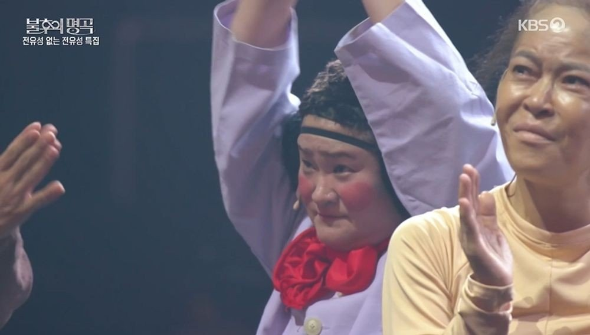
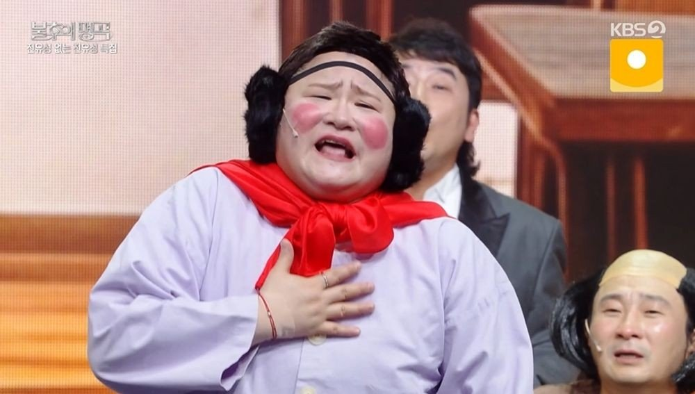
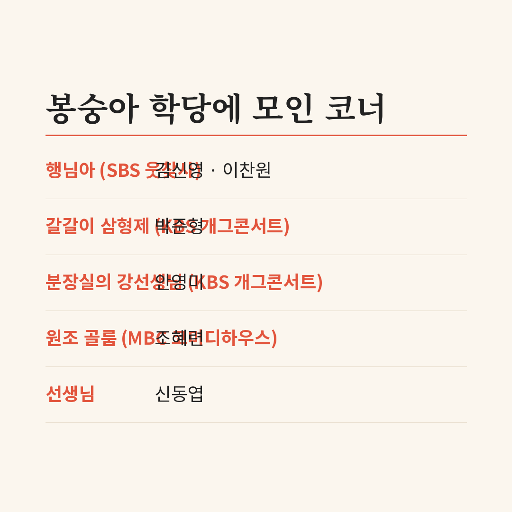
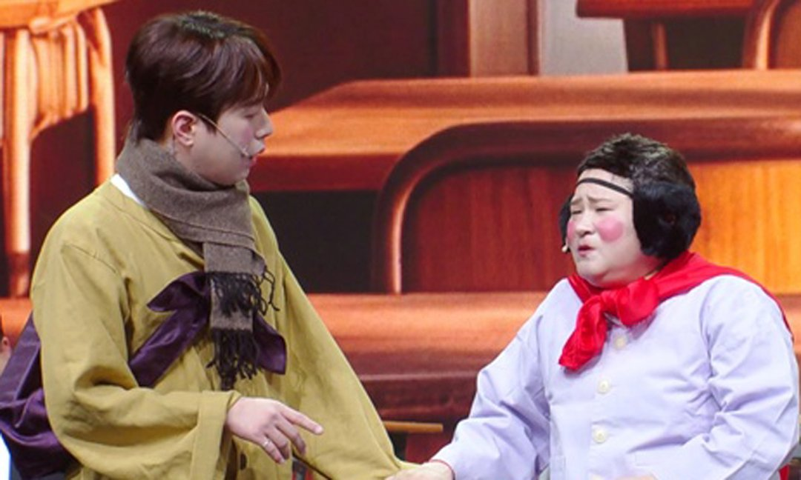
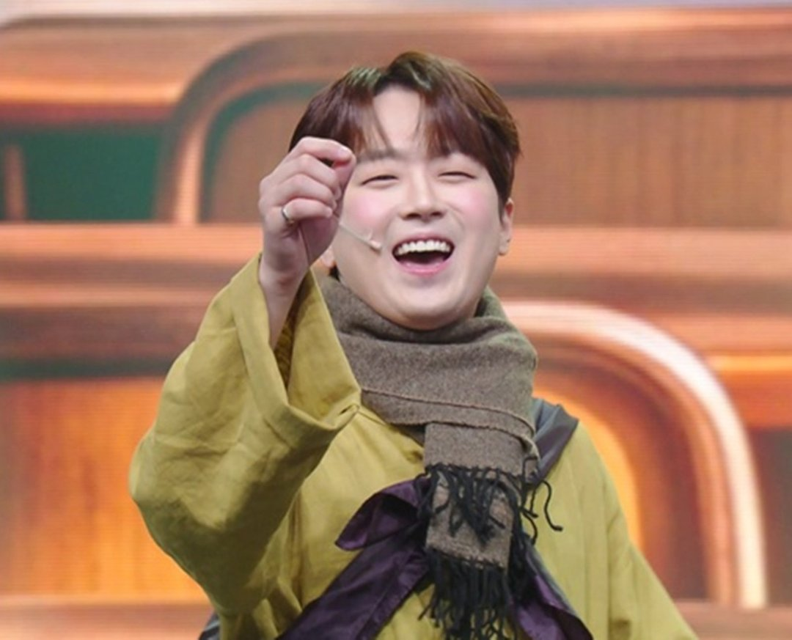

"웃기는데 무슨 방송국이 따로 있어? 계속 웃겨." 7일 KBS2 '불후의 명곡' 전유성 1주기 특집은 AI로 만든 전유성의 이 한마디로 마무리됐어요. 이 말이 왜 마지막에 놓였는지는 그 앞 무대를 순서대로 보면 보여요. 김신영의 토크부터 봉숭아 학당, AI 편지까지 차례로 정리했어요.
📷 사진 1 자리
▲ KBS2 '불후의 명곡' 전유성 1주기 특집 무대에 선 김신영 · 사진=KBS2 ‘불후의 명곡’ 제공
한물가면 축하한다던 교수님
김신영에게 전유성은 '교수님'이에요. 힘든 이야기를 남에게 잘 안 하는 편이라, 참다 참다 털어놓는 상대가 교수님이었다고 해요. 사람들이 자기더러 한물갔다고 한다는 말에 돌아온 답은 위로가 아니라 축하였어요. "한물가고 두물가면 보물 된다"는 거죠.
공황장애를 처음 알았을 때도 김신영은 교수님에게 가장 먼저 전화했어요. 이번에도 첫마디는 축하였고, 그 뒤 교수님은 관련 책을 따로 찾아 읽었다고 해요. 김신영이 식은땀을 흘리면 괜찮다며 치킨 먹겠느냐고 화제를 돌려 줬다는 이야기도 했어요.
📷 사진 2 자리
▲ '2026 봉숭아 학당'에서 '행님아' 분장으로 나온 김신영 · 사진=KBS2 ‘불후의 명곡’ 제공
반세기 넘게 우정을 이어 온 양희은도 무대에 섰어요. 1주기라 검은 옷을 입었다며 말하자면 제삿날이라고 웃었고, 하늘을 향해 형은 듣고 있느냐고 말을 건넸어요. 쉽지 않고 괴팍한 사람이었지만 좋은 게 있으면 다 퍼 주던 사람이었다는 게 양희은의 기억이에요.
봉숭아 학당, 세 방송사 코너가 한 교실에
마지막 순서는 '2026 봉숭아 학당'이었어요. 선생님 역의 신동엽은 3사 코미디언이 한 무대에서 함께 웃기는 게 전유성의 꿈이었다고 소개했어요. 이날 수업 주제도 '꿈은 이루어진다'였고요.
📷 사진 3 자리
첫 발표자는 SBS '웃음을 찾는 사람들'의 '행님아'였어요. 형님 역은 이찬원, 동생 역은 김신영이에요. 이찬원이 김신영을 들어 올리다 많이 묵직해졌다고 하자 김신영은 "마음은 가벼워졌습니데이"로 받았어요. 이어 업어 주려는 이찬원을 말리고, 오히려 자기 등에 업히라며 이찬원을 업어 올렸어요. 형님과 동생이 자리를 바꾼 반전이죠. 이 장면은 KBS 공식 클립으로 볼 수 있어요.
📷 사진 4 자리
▲ '행님아'를 재현한 이찬원과 김신영 · 사진=KBS 제공
▶ 영상 1 자리
📷 사진 5 자리
▲ '행님아' 형님 역으로 무대에 선 이찬원 · 사진=불후의 명곡 제공
KBS '개그콘서트' 쪽에서는 '갈갈이 삼형제' 박준형이 무와 알로에를 앞니로 갈았어요. '분장실의 강선생님' 안영미가 골룸으로 나오자, MBC '코미디하우스'의 원조 골룸 조혜련이 뛰어나와 두 골룸이 한 무대에 섰어요. 이경실은 20년 만에 개그 분장을 했다고 밝혔어요.
📷 사진 6 자리
▲ '갈갈이 삼형제'를 재현하는 박준형 · 사진=KBS2 ‘불후의 명곡’ 제공
끝으로 객석에서 김정렬이 등장했어요. 장례식장에 오면 슬퍼하지 말고 숭구리당당 춤으로 보내 달라던 생전 부탁을 무대에서 지킨 셈이에요.
AI 편지에 돌아온 수업 주제
방송 끝에 AI로 만든 전유성의 영상 편지가 나왔어요. 후배들이 한 무대에 모여 웃기는 걸 보고, 꿈은 이루어진다더니 진짜 이루어졌다고 말하는 내용이에요. 봉숭아 학당의 주제가 편지에서 그대로 돌아온 셈이죠. 앞으로도 자주 모이라는 당부와 수고했다는 인사로 편지가 끝나자 출연자들은 눈물을 보였어요.
김신영이 들려준 '한물가면 축하'와 편지 속 '웃기는 데 방송국이 따로 있냐'는 결이 같아요. 남들이 걱정할 일을 웃음 쪽으로 돌려 놓는 말투예요.
무대를 순서대로 놓고 보니 이 특집의 중심은 눈물보다 '코너 재현'이었어요. 행님아, 갈갈이 삼형제, 골룸처럼 방송사가 다른 코너를 하나씩 불러와 고인의 꿈을 실제 무대로 만든 구성이라, 추모 방송인데도 웃음 장면이 더 많이 남아요. 원조 코너를 기억하는 분이라면 행님아 공식 클립부터 보는 걸 권해요.
✍️ 직접 보거나 들은 경험이 있으면 위 문단에 한두 줄 덧붙이세요 (이 안내 줄은 지우기)
김신영·이찬원의 '행님아'는 KBS 공식 유튜브 채널 'KBS 레전드 케이팝'에 올라와 있어요. '불후의 명곡'은 토요일 저녁 KBS2에서 방송해요.




